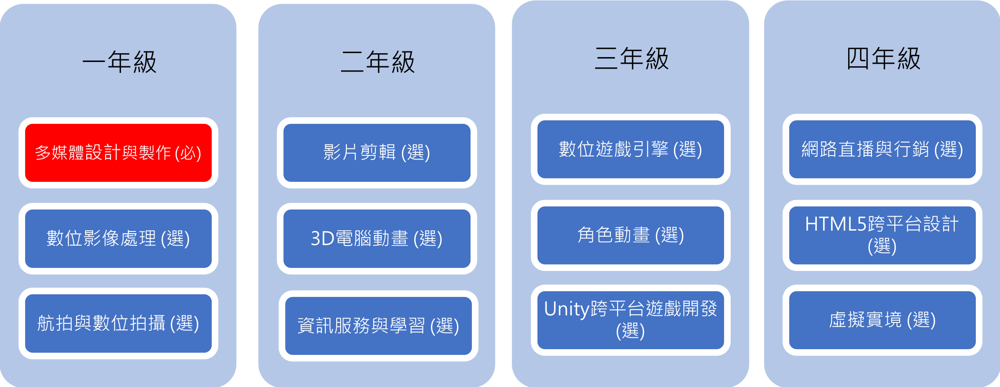

為提升課程結構多元性，並且方便學生選課和生涯規劃的參考，本系建構完整的課程地圖，以課程模組化的方式規劃課程地圖，108學年度以「AI大數據」及「數位多媒體」為主軸，兩個主軸皆以資訊專業基礎/核心課程為碁石，建構學生良好之職場倫理素養，培養專業與人文並重之人才，整體課程模組之規劃如下圖所示，各課程模組內容說明如下：
本系課程模組之規劃
此模組主要以人工智慧養成教育為主，先以程式邏輯打下基礎，依序以資料蒐集（物聯網）、辨識（人工智慧）、移動（行動裝置）、到學習、探勘、應用（醫療資訊、商業智慧），來強化學生專業應用及實務操作之能力。
AI大數據模組
因應數位化多媒體及資訊科技的不斷發展，此模組是以數位內容及互動多媒體為主，先以數位媒體製作打下基礎，依序以數位拍攝、剪輯、遊戲引擎、動畫，引導同學進入到直撥、行銷、Web混合實境之應用，使同學具備資訊科技及多媒體的專業應用及實務操作之能力。

數位多媒體設計模組
因應數位化多媒體及資訊科技的不斷發展，此模組是以數位內容及互動多媒體為主，先以數位媒體製作打下基礎，依序以數位拍攝、剪輯、遊戲引擎、動畫，引導同學進入到直撥、行銷、Web混合實境之應用，使同學具備資訊科技及多媒體的專業應用及實務操作之能力。
數位多媒體設計模組